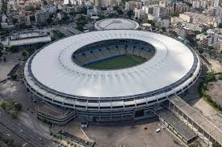

Você se lembra do Brasileirão de 2022 ?
O Brasileirão de 2022 ocorreu normalmente em um regulamento que não houve alteração em relação ao ano anterior, ao todo 20 equipes se enfrentaram no campeaonato que é divido em 2 turnos e tem ao total 38 rodadas.
O campeonato terminou tendo o Time Sociedade Esportiva Palmeiras como o campeão daquele ano, mas afinal, quais foram os times que permaneceram no G4 ? veja abaixo:
G4 do brasileirão 2022
- Palmeiras - Campeão Nacional 2022.
- Internacional - Vice-Campeão Nacional 2022.
- Fluminense - Terceiro Lugar no Brasileirão 2022.
- Corinthians - Quarto Lugar no Brasileirão 2022.
Palmeiras

Na 1° Colocação ficou o Palmeiras, Conheça mais sobre o time:
Nome:Sociedade Esportiva Palmeiras
Estado do time:São Paulo
Estádio do time:Allianz Parque
Curiosidades:o Palmeiras é a equipe brasileira com o maior número de títulos de abrangência nacional conquistados, sendo o único a vencer todas as competições oficiais que disputou criadas no País
Internacional

Na 2° Colocação ficou o Internacional, Conheça mais sobre o time:
Nome:Sport Club Internacional
Estado do time:Porto Alegre, Rio Grande do Sul
Estádio do time:Beira-Rio
Curiosidades:O clube foi nomeado Internacional inspirado na missão de acolher representantes de diferentes nacionalidades no time. Na época, era comum a hegemonia de descendentes de alemães nos clubes riograndenses. Foi com essa preocupação de incluir todos os jogadores que o time ganhou também o epíteto de Clube do Povo.
Fluminense
Na 3° Colocação ficou o Fluminense, Conheça mais sobre o time:
Nome:Fluminense Football Club
Estado do time:Rio de Janeiro
Estádio do time:Maracanã
Curiosidades:Considerada o Prêmio Nobel do Esporte, o Fluminense é o único clube da América Latina que detém a Taça Olímpica, em 1949, além de ser o único clube de futebol do mundo ter seu nome inscrito na honraria concedida pelo Comitê Olímpico Internacional por serviços prestados ao esporte.
Corinthians

Na 4° Colocação ficou o corinthians, Conheça mais sobre o time:
Nome:Sport Club Corinthians Paulista
Estado do time:São Paulo
Estádio do time:Neo Química Arena

Curiosidades:O Corinthians foi o primeiro campeão da Copa do Mundo de Clubes da Fifa. Em 2000, jogando na condição de campeão nacional do país-sede, o Timão derrotou o Vasco no Maracanã nos pênaltis e levou o título.